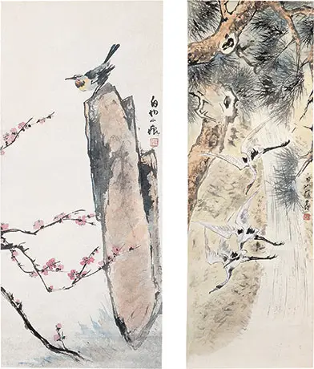

At the Frye: Tobey and Teng
访问原网页 ↗Visit original website ↗

S026 · Thomas May / Memeteria · 2014-03-10
含Bird on Rock与Cranes and Pine Tree合图；图注称均作于1949年前、包铭新收藏。Includes a combined image of Bird on Rock and Cranes and Pine Tree, captioned as pre-1949 works in the Bao Mingxin collection.
馆藏图像与原文Archived images and documents

来源页摘录Source-page excerpt
At the Frye: Tobey and Teng | MEMETERIA
The American painter Mark Tobey (1890-1976) found himself at a turning point in his career when he discovered inspiration from the East.…
原始网址Original URL
https://memeteria.com/2014/03/10/at-the-frye-tobey-and-teng/